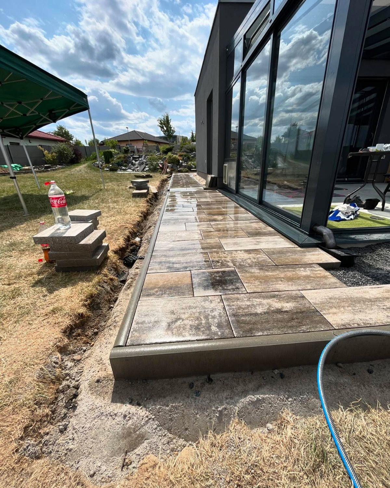
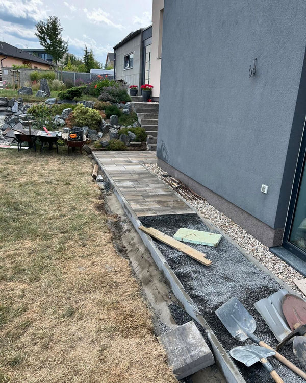

Rizikové kácení
Stromy v těsné blízkosti domů, drátů nebo plotů. Bezpečně, po kouskách, s jistící technikou.
Potřebujete pokácet strom, položit novou dlažbu nebo postavit pergolu? Jsme parta řemeslníků, co pracuje poctivě a s citem pro detail. Zavolejte — domluvíme se.


Za 3Trapol stojím já osobně. Řemeslu se věnuju naplno a ke každé zakázce chodím sám — ne cizí parta, co ji nikdy neviděla.
Sídlím ve Velkých Popovicích kousek od Prahy, ale vyjíždím po celé ČR. Nejvíc zakázek dostanu z doporučení — zákazník vidí výsledek u souseda a zavolá. To mi říká, že dělám věci dobře.
Přijedu, podívám se na to, řeknu cenu bez okolků. Pokud se domluvíme — práci odvedu poctivě a po sobě uklidím.
Od rizikového kácení stromů přes zámkovou dlažbu až po stavební práce. Jedna firma, všechno pod kontrolou.
Stromy v těsné blízkosti domů, drátů nebo plotů. Bezpečně, po kouskách, s jistící technikou.
Chodníky, příjezdové cesty, terasy. Poctivá příprava podloží a čisté spárování.
Dřevěné i kovové konstrukce na míru — od altánu na zahradě po zastřešení auta.
Čištění střech, drobné opravy, mytí fasád. Jištěno lanem, odvezeno v pořádku.
Ploty, brány, záhony, postele, schody. Všechno, co se dá udělat z dřeva.
Nevíte, pod kterou kategorii to spadá? Napište — pravděpodobně to umíme.
Napište nám co potřebujete — nezávazně vám během dne odpovíme a domluvíme obhlídku.
Nezávazná poptávka →